The goal of this project is to document real-world cloud engineering deliverables across security, compute, storage, and deployment automation.
During an internal security audit at NexusCorp, it was discovered that contract developers were sharing root account credentials to test applications — a major security risk.
My job was to fix that. This article documents how I secured the root account, enforced MFA, and set up Role-Based Access Control (RBAC) using the Principle of Least Privilege — including creating a restricted sandbox account for a junior developer named Alex.
Follow along to see exactly how it was done, step by step.
Contract developers were sharing root account credentials to test applications. This created shared credential risks, triggered audit findings, and exposed NexusCorp to serious compliance violations.
As the engineer assigned to this ticket, I was tasked to achieve the following:
Navigate to the AWS Console and select sign in as root user.
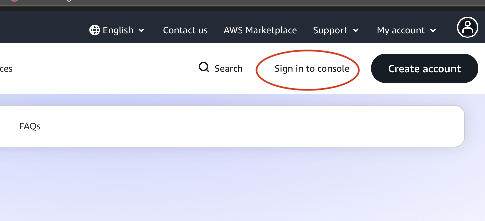
Enter the root account email address to proceed with login.
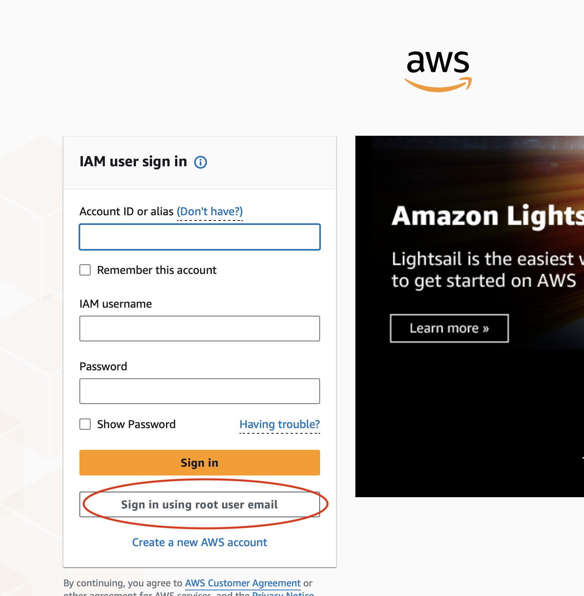
Input the registered root email address associated with the AWS account.
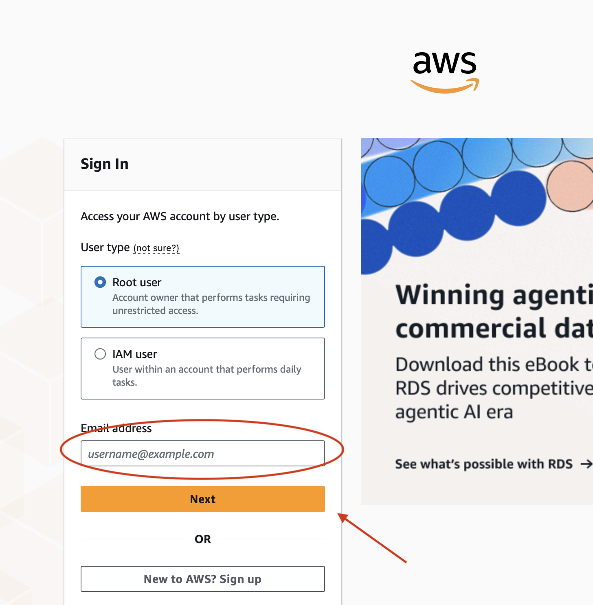
In the AWS Console, search for MFA to locate the security credentials settings.
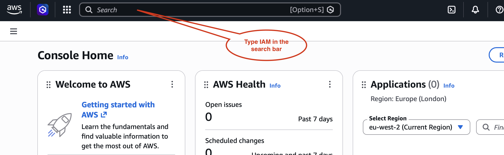
Select the option to assign an MFA device to the root user account.
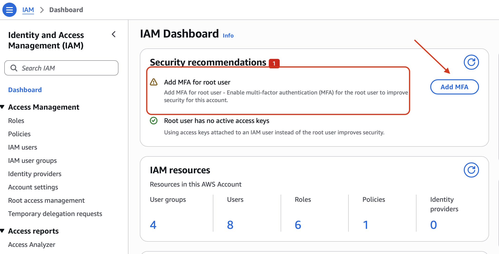
Enter a device name and select Authenticator App as the MFA method.
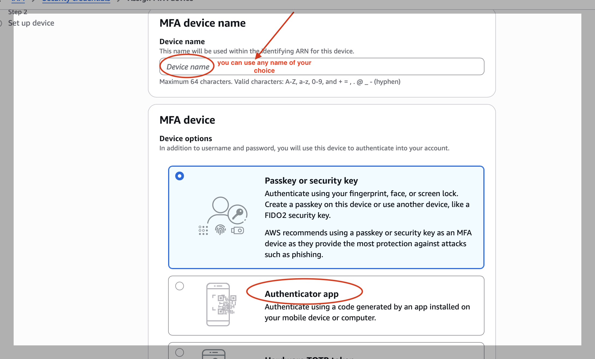
Open your authenticator app and prepare to scan the QR code.
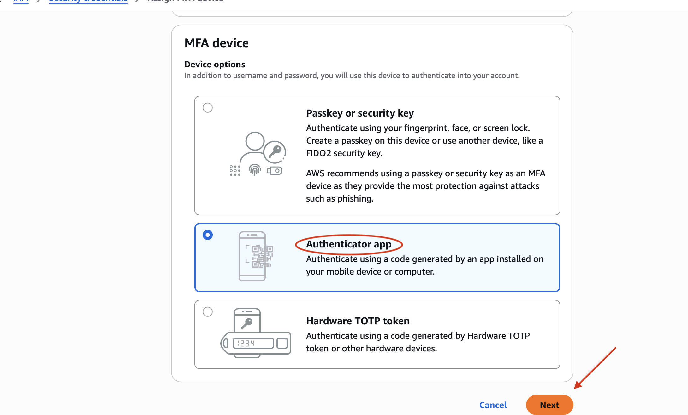
Scan the QR barcode using your authenticator app to link the MFA device.
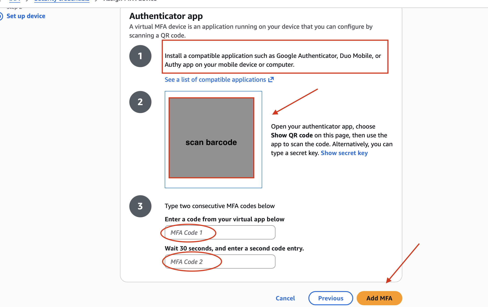
MFA has been successfully assigned to the root account. The root account is now protected with two-factor authentication.
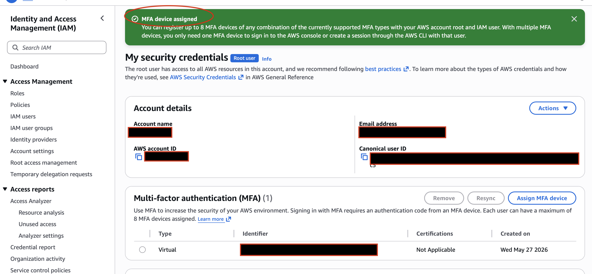
In the AWS Console search bar, type IAM and select the IAM service to begin setting up user groups.
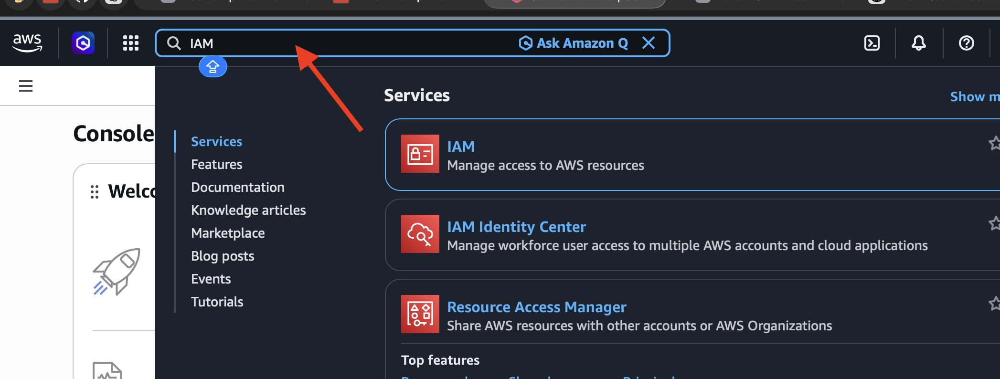
Inside the IAM Console, navigate to User Groups and click Create Group.
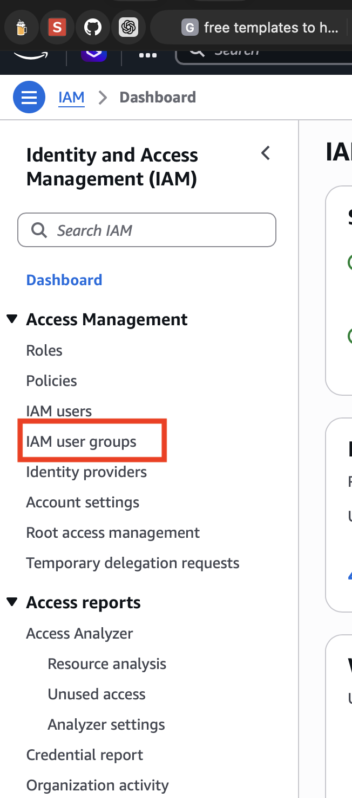
Name the group Finance-Auditors to clearly identify its purpose and scope.
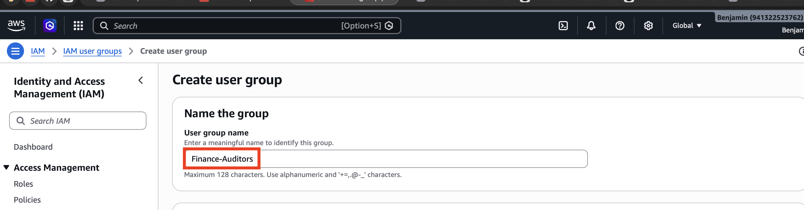
Search for and select the AWS managed policy to attach to the Finance-Auditors group.
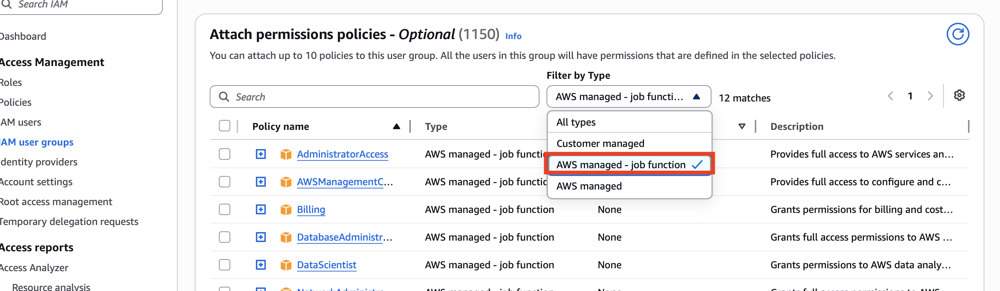
Attach the Billing managed policy to the Finance-Auditors group, granting financial visibility without admin access.
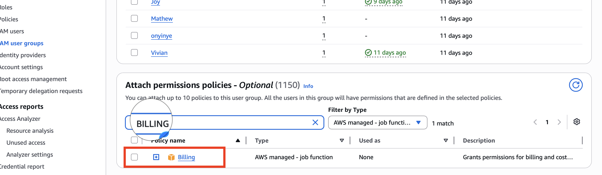
Create a personalised IAM User for yourself, assign it to the Finance-Auditors group, and grant it administrator console permissions. Once done, log out of the root account immediately — from this point forward, the root account is off-limits.
Navigate to your search bar and search for IAM.
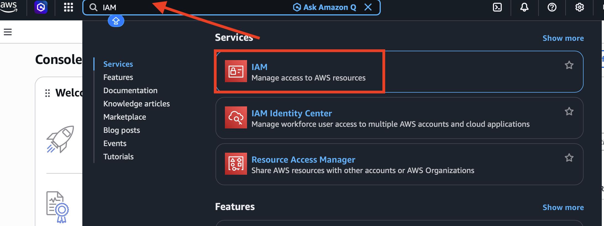
Click IAM User.
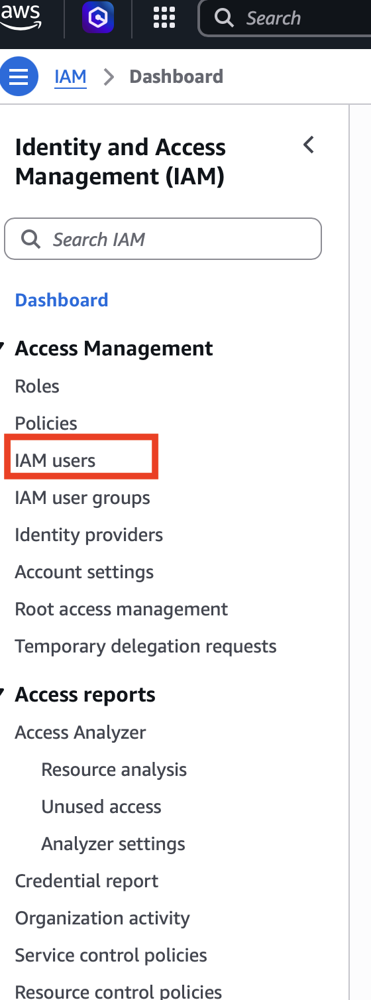
Enter your personalised username for the admin proxy account, enable AWS Management Console access and set an initial password for the user.
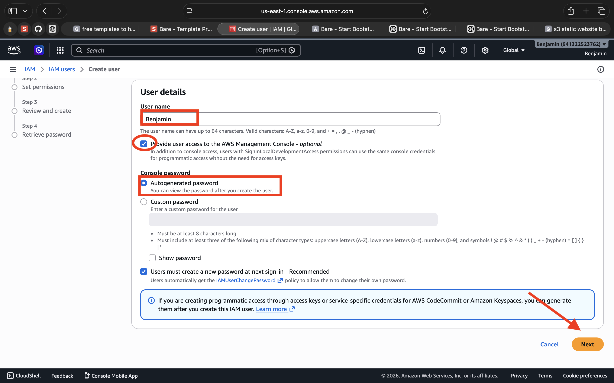
Add the new user to the Finance-Auditors group to inherit its billing permissions.
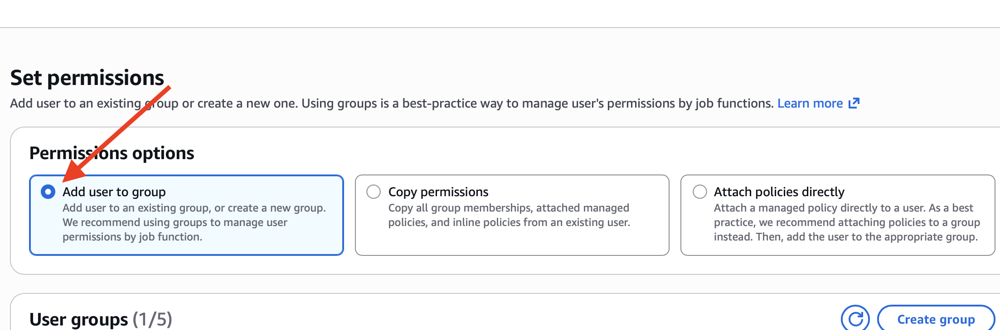
Attach the AdministratorAccess policy directly to grant full console permissions.
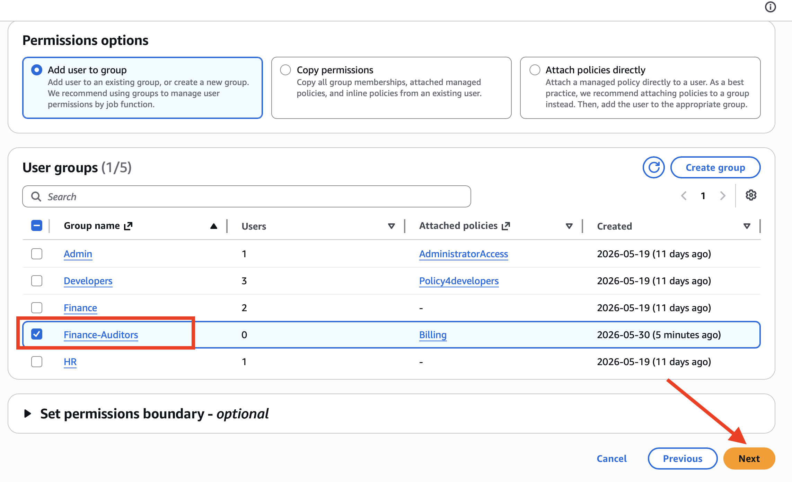
The admin proxy user has been created successfully. AWS will now present you with two options to retrieve the login credentials:
Once credentials are saved, log out of the root account immediately. From this point forward, all AWS activity must be performed through this admin IAM user — the root account is now off-limits.
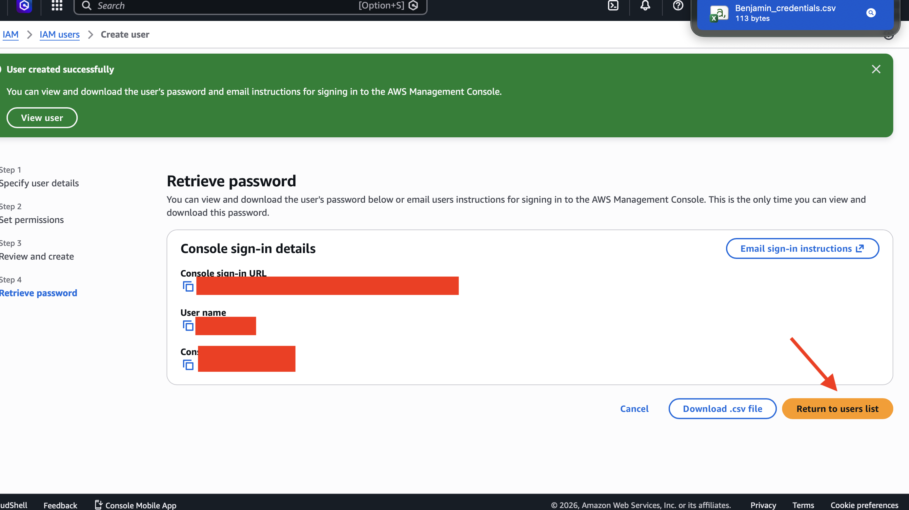